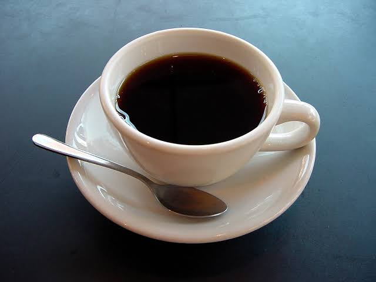

1.The Home page of google using Class
Google Search
I'm Feeling Lucky
2.Css program to float an image to the right as shown
 Cup of coffee is a brewed drink with a distinct aroma and flavor, prepared from roasted coffee beans, the seed found inside "barries" of the coffee plant. Coffee plant are cultivated in over 70 countries, primarly in equatorial Latin America, Southeast Asia, India and Africa. The two most commonly grown are the highly regarded arabica, and the less sophisticated but stronger and more hardly robuster. The letter is resistant to the coffee leaf rust Hemileia vastatrix, but has a more bitter taste. Once ripe, coffee beans are picked, processed, and dried, Green(unroasted) coffee beans are one of the most traded agricultural commodities in the world. Once treaded, the beans are roasted to varying degrees, depending on the desired flavor, before being ground and brewed to create coffee. Coffee is slightly acidic and can have a stimulating effect on humans because of the caffeine content. It is one of the most popular drinks in the world, It can be prepared and presented in a variety of ways. The effect of coffee on human health has been a subject of many studies however, results have varied in terms of coffee's relative benefit. The majority of recent research suggest that moderate coffee consumption is benign or mildly beneficial in healthy adults. However, the diterpenes in coffee may increase the risk of heart disease.